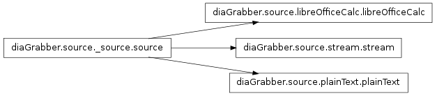

diaGrabber.source¶

Baseclass for all sources¶
- class diaGrabber.source._source.source(data_type)¶
Bases: object
The basis-class for all type of sources provides some general functions. And evaluate the ‘data_type’ data_type can be “int”, “float”, hex” or “fooBar” in case you don’t know the type of your data.
- _evalDataType(data_type)¶
- ‘int’: integer numbers
- ‘float’: floating-point numbers
- ‘hex’: hexadecimale numbers
- setBasis(basis_list)¶
In diaGrabber every generated basis-dimension will added to the basis. Use this method to define an alternative list of basis-dimensions.
- setMerge(merge_list)¶
In diaGrabber every generated merge-dimension will added to the basis. Use this method to define an alternative list of merge-dimensions.
plainText¶
- class diaGrabber.source.plainText.plainText(**kwargs)[source]¶
Readout values from a plain-text saved in file. The format has to be similar to the following example:
value00 value01 value02 value10 value11 value12 ...
Where the values of all dimensions are written in one line, seperated by one or more signs like spaces ‘ ‘ or tab ‘ ‘.
For a list of all possible Keyword-arguments have a look at setArgs()
- basisDimension(**kwargs)¶
includes diaGrabber.source._dimension.basisDimension to the source
- mergeDimension(**kwargs)¶
includes diaGrabber.source._dimension.mergeDimension to the source
- setArgs(**kwargs)¶
Required kwargs (“keyword arguments”) are:
Keyword Type Example Description file string ‘myFile.txt’ the name of your plainText-file dimSeperator string ‘ ‘ (space) the sign, that seperates the values in one line e.g. ‘ ‘ for a tab Optional kwargs (“keyword arguments”) are:
Keyword Type Default Description dataType string “unknown” for all possible values are defined see diaGrabber.source._source.source._evalDataType() nFileLines int 0 if you know the number of lines in your file you can avoid the (time-consuming) counting of it through diaGrabber readoutEveryNLine int 1 if you don’t need every line of your file you can spare time by readout only every n line of it folder string “” the name of the folder of the file buffer int 10e6 max. size(byte) loaded into RAM insert ‘0’ to read the whole file
stream¶
- class diaGrabber.source.stream.stream(**kwargs)[source]¶
Readout values from a process which produces unlimited or limited output to RAM. The process output after the following scheme:
time0 --> "value00 value01 value02" time1 --> "value10 value11 value12" ...
Where the values of all dimensions are written in one line, seperated by one or more signs like spaces ‘ ‘ or tab ‘ ‘.
- basisDimension(**kwargs)¶
includes diaGrabber.source._dimension.basisDimension to the source
- mergeDimension(**kwargs)¶
includes diaGrabber.source._dimension.mergeDimension to the source
- setArgs(**kwargs)¶
Required kwargs (“keyword arguments”) are:
Keyword Type Example Description command string ‘python’ OR ‘./’ The command to start the stream file string ‘test.py’ The name of the stream dimSeparator string space: ‘ ‘ OR TAB: ‘ ‘ One or more signs which seperates the values in every line stopVia string ‘done’ If the stream is limited this string let’s diaGrabber when the stream finishes Optional kwargs (“keyword arguments”) are:
Keyword Type Default Description folder string “” Name of the parent folder of the stream readoutEveryNLine string/int 1 if you don’t need every line of your file you can spare time by readout only every n line of it. Most likely the stream generates faster new output than diaGrabber can process, In this case this value has to be greater than 1, Type ‘calc’ to let diaGrabber decide this value corresponding to the development of the amount of unprocessed output. showCalcNLine bool False if readoutEveryNLine == ‘calc’ Setting this value to True print out every new calculated value of readoutEveryNLine infoEveryNLine int 1000 Prints every n reaout-lines a status. dataType string “unknown” for all possible values are defined see diaGrabber.source._source.source._evalDataType() keyToEndProcess string “” This entry will finish the stream-output runInShell bool False Decide whether a process has to be called out of a shell. Set this value to True if the stream doesn’t start.
libreOfficeCalc¶
- class diaGrabber.source.libreOfficeCalc.libreOfficeCalc(**kwargs)[source]¶
Allow to read values from a libre/open-office-calc document For a list of all possible Keyword-arguments have a look at setArgs()
- basisDimension(**kwargs)¶
Add a new basis-dimension to the source. See diaGrabber.source._dimension.basisDimension for further explanation and options. Replaces keyword ‘index’ with ‘cellRange’:
Parameters: cellRange (string) – [“START:STOP”] range of the cells in the ods-file e.g. “C2:C1000” or “A1:E10”
- mergeDimension(**kwargs)¶
Add a new merge-dimension to the source. See diaGrabber.source._dimension.mergeDimension for further explanation and options. Replaces keyword ‘index’ with ‘cellRange’:
Parameters: cellRange (string) – “START:STOP” range of the cells in the ods-file e.g. “C2:C1000” or “A1:E10”
- setArgs(**kwargs)¶
Required kwargs (“keyword arguments”) are:
Keyword Type Example Description file string “myFile.ods” Name of the ODS-File sheet string/int “sheet1” OR 1 Sheet-name or number in the ODS-file Optional kwargs (“keyword arguments”) are:
Keyword Type Default Description folder string “” Name of the parent-folder of the file readoutEveryNLine int 1 read every n line from the file dataType string “unknown” for all possible values are defined see diaGrabber.source._source.source._evalDataType() ignoreEmptyCells bool True Set to False to exit, when cells inthe cellRange of thedimensions are empty